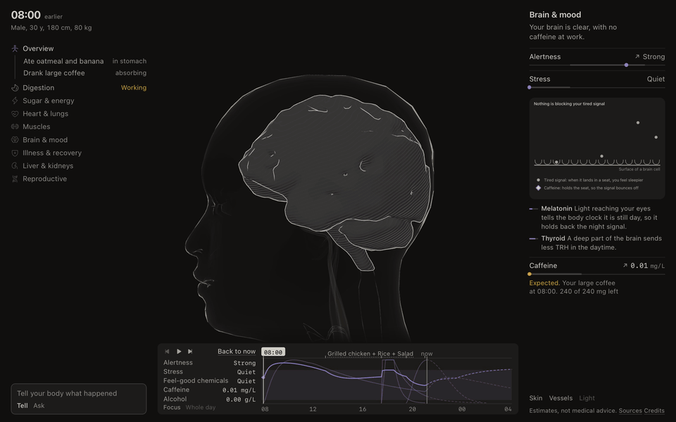

A 3D body that shows what is happening inside you.
Tell it what happened, or ask it anything, in plain words. It runs on your own computer, on your ChatGPT or Claude subscription. Open this page on a computer to try it.

Run it
git clone https://github.com/yahorbarkouski/bodylang
cd bodylang && pnpm install && pnpm dev